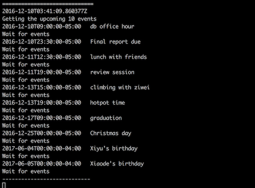
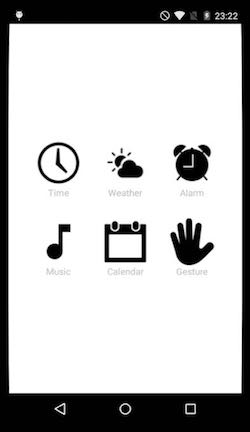

Basic Function Modules
Time:
For time display, we retrieve current time from system clock, and use pygame to place time at the center of screen.
Weather
figure 1: Time Display
Before working on actual weather report display, we first need to install a module that provides python wrapper around Yahoo Weather, Weather.com and NOAA APIs, Python-weather-api. We download pywapi from Google Code Archive:
https://code.google.com/archive/p/python-weather-api/
After extracting it into our Pi home directory, we build and install this API:
$ sudo python setup.py build
$ sudo python setup.py install
Then, we are able to import this useful API in our weather report Python script. Through Python weather API, we grab all local weather information from Weather.com via local zip code. Inside giant weather information tuple, we retrieve temperature, humidity, and next four days’ weather forecast. In an icon folder, we store some images of different weathers. By using Pygame library, we split display into three parts. On top left, we place current weather and humidity. On top left is a calendar with weeks and days of current month. On bottom are weather forecast of next four days. We also set a time interval of one minute to keep updating weather information from online source.
Music Player
figure 2: Weather Report
We use the Raspberry Pi as a music player. It will download music from the internet and play automatically. We select mpg123 as our music playing software. It’s a free open-source audio player that supports decoding and playing music online. We need to install mpg123 by:
$ sudo apt-get install python-setuptools mpg123 -y
Originally, we think about searching music by their name. However, due to copyright, we couldn’t find a good API to index the mp3 file with the music name. To solve this, we find some URL links that end with “.mp3” and store the name, URL pair into a database. We import sqlite3 module to provide a lightweight disk-based database. When we start music player, it connects to music database to fetch the URL used for mgp123 to decode and download music.
We import control keys of mpg123 which enables terminal control. Pressing 'h' for listing keys and pressing “q” for shifting songs. The command is:
figure 3: Fetch Music Online
$ mpg123 -C url
We set two music playing mode: playing music in order and playing randomly. When we choose playing all music in order, pressing “q” could change to next song. When playing random, pressing “q” might shift to any songs in list.
Google Calendar Alarm
figure 4: Control Keys of mpg123S
It’s an alarm clock that syncs with our Google Calendar. It could fetch our events information and set alarm automaticlly.
It needs the following libraries installed on your Raspberry Pi:
• httplib2First download httplib2 library and unzip it.
$ cd httplib2-0.9.2/
$ sudo python setup.py build
$ sudo python setup.py install
• apiclient
$ sudo pip install --upgrade google-api-python-client
• APSchedulerFor APScheduler, we need to install version 2.1.2, if you have already installed APScheduler, you need to uninstall it.
$ sudo pip uninstall apscheduler
$ sudo pip install apscheduler==2.1.2
Since google calendar provide API for us to get upcoming ten events, we could use this API connecting with our google calendar. When first run our program, it will attempt to open a new window or tab in our default browser for the authorization. Then we could get the upcoming ten events.
For setting alarm, we get the json file of each event and obtain the start time information. We convert current time and start time into the same format and compare. If there are same, we use mpg123 to play the alarm music stored in a certain path. To add alarm at specific time/date, just head to Google Calendar and create an Event.
figure 5: Get Upcoming Ten Events
Since we could set our event time correct to minute in google calendar, in our program we use scheduler to trigger our event synchronization program every 60 seconds.
figure 6: Trigger Alarm
Gesture Control
Install OpenCV 3 on Raspberry Pi 3
We follow the instruction below to install OpenCV 3 http://www.pyimagesearch.com/2015/10/26/how-to-install-opencv-3-on-raspbian-jessie/
Accessing Pi camera with OpenCV and Python
With Pi camera module installed, we need to enable it in configuration:
$ sudo raspi-config
After that, we use pip to install picamera so that we could interface with Pi camera module using Python and OpenCV:
$ pip install "picamera[array]"
Reason to install picamera[array], instead of just picamera, is to support NumPy arrays during image processing. Pi camera has a relative comprehensive library and is easy to access.
Gesture Control
Our gesture control function contains three different parts.First, we define a class named MotionDetector, which is a sub-function used to detect any motions within certain area. If motion of hand is detected, we then compute absolute difference between background and image passing in to find threshold of delta image. After finding out contours of threshold image, we can retrieve a general image of our hand.
We also define another function called GestureDetector, which takes threshold image of hand from detected motion and calculates central point as well as how many finger displayed. With different gestures, we assign them to different functions.
For third part, the main function, we initialize our pi camera, and take first 32 frames to catch a static background image as reference. It is extremely important that there should be absolute no movement happen during those frames since it will be used to compare with motion picture in the future.
Then, we start motion detection function. When hand is detected, it triggers gesture recognition. When sufficient number of frames is reached, say 25 frames, we recognize number as how many fingers detected, and trigger different functions.
figure 7: Initialize Pi Camera
figure 8: Background Image
figure 9: Gesture Recognition
figure 10: Trigger Different Functions
Remote Control
To make our alarm clock smarter, we decide to build an Android APP on our phone to control it. This app acts as a remote control, we could trigger different functions of alarm clock without touch it. It’s much more convenient if we are not close to it.
System Design
We use Android Studio to design the APP and build the connection between Android and Raspberry Pi. The flow diagram of remote control system is below:
UI Design
figure 11: Android App System Design
We design our Android APP UI using Android Studio. Since the users will interact with this APP, we try to make our UI simple and clean. We screenshot the UI of the APP. There are six image buttons: Time, Weather, Alarm, Music, Calendar and Gesture. When click on different buttons, Android could connect with Raspberry Pi, trigger different functions to control it.
Communication with Raspberry Pi:
figure 12: UI Design
We use TCP/IP protocol to build communication between Android App and raspberry pi. Since the IP address could change if we connect to different WIFI, we want to know current IP address of our raspberry pi first. We setup a server in raspberry to broadcast its’ IP address to all the devices in this LAN at a certain port. The Android device in the same LAN will receive the broadcast and locate the IP address of the server. When Android device receives this message, it will show “get IP address of Raspberry Pi” on the screen.
Now we could start server on the raspberry pi. When we click the button through android devices, a session will be established to build communication between raspberry Pi and Android using TCP socket.
figure 13: Get IP Address of Pi
figure 14: Click On Time Button
figure 15: Control Pi Using Android App
Integration
Finally we integrate all these functions into a whole system. We run a bash script to enable google calendar running background, continuing to update event information and set alarm automaticlly. Also, server on Raspberry Pi is also enabled to connect with our app on phone. All functions including gesture control could be open by clicking on phone. Once gesture control is selected, other functions would be triggered via different hand gestures.
figure 16: Smart Alarm Clock System